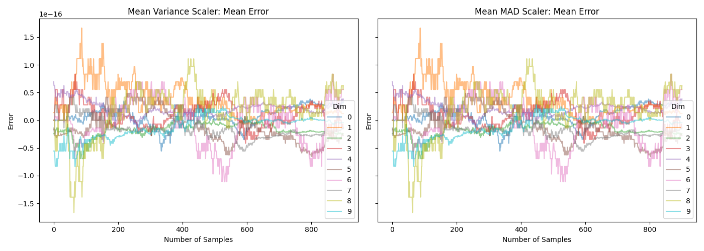
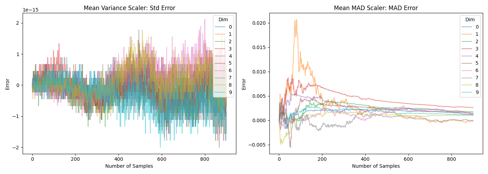

Online Scaling and Preprocessing
Feature Scaling: Mean-STD vs. Mean-MAD
This module provides two normalization strategies with different assumptions about the data distribution and sensitivity to outliers.
Mean-STD Scaling
Transforms each feature as: z = (x - mean) / std and hence
- Centers data around
0using the arithmetic mean. - Scales to unit variance using standard deviation.
- Works best when features are approximately Gaussian and outliers are limited.
- Sensitive to extreme values, since both
meanandstdare strongly affected by them.
Mean-MAD
Transforms each feature as: zt = (x - mean) / MAD where:
MAD = mean(|x - mean|)is the mean absolute deviation from the mean.- Reduces the influence of outliers compared to standard deviation-based scaling.
- Better for heavy-tailed, skewed, or contaminated datasets.
- May be less efficient than mean-STD scaling on normal data
- Does not track exactly online, but only approximately (see below)
Choosing between them
- Use
OnlineScalerfor well-behaved, near-normal features and models that assume standardized Gaussian-like inputs. - Use
OnlineMeanAbsoluteDeviationScalerwhen outliers are common or feature distributions are non-Gaussian and you want more stable scaling factors.
Online Tracking Behaviour
The mean can be tracked online exactly through a simple recursion formula.
Based on this and Welford's formula (see e.g. here), the variance and weighted variances can be tracked exactly. The variance is defined as: $\(\text{Var}_n = \frac{1}{n} \sum_{i=1}^{n} (x_i - \mu_n)^2\)$ and the following key identity allows online update: $\(\sum_{i=1}^{n} (x_i - \mu_n)^2 = \sum_{i=1}^{n-1} (x_i - \mu_{n-1})^2 + n(\mu_n - \mu_{n-1})^2\)$ However, for the mean absolute deviation from the mean, no such closed-form \(\mathcal{O}(1)\) update exists.
The reason for this is explained in the following quick example. The true MAD after \(n\) updates is defined as: $\(\text{MAD}_n = \frac{1}{n} \sum_{i=1}^{n} |x_i - \mu_n| \quad \text{where} \quad \mu_n = \frac{1}{n} \sum_{i=1}^{n} x_i\)$ But online tracking gives you: $\(\text{MAD}_{\text{online}} = \frac{1}{n} \sum_{i=1}^{n} |x_i - \mu_i| \quad \text{where} \quad \mu_i = \text{mean after } i \text{ points}\)$ Where each \(x_i\) is measured against a different mean (\(\mu_i\) instead of \(\mu_n\)). and there is no: $\(\sum_{i=1}^{n} |x_i - \mu_n| \neq \sum_{i=1}^{n-1} |x_i - \mu_{n-1}| + [\text{simple update term}]\)$ The absolute value prevents algebraic simplification. We cannot incrementally update MAD when the mean changes without revisiting all previous points.
The difference can also be seen in the following two plots. Note that the \(y\)-axis in the lower plot is very different.


Which can be generated with the following script:
import numpy as np
import scipy.stats as stats
import matplotlib.pyplot as plt
from ondil.scaler import (
OnlineMeanAbsoluteDeviationScaler,
OnlineScaler,
)
INIT_SIZE = 100
SIZE = 1000
DIMS = 10
SEED = 42
rng = np.random.default_rng(SEED)
mean_var = OnlineScaler()
mean_mad = OnlineMeanAbsoluteDeviationScaler()
X = rng.standard_normal(size=(SIZE, DIMS))
w = rng.uniform(0.1, 1.0, SIZE)
true_mean = np.zeros((SIZE - INIT_SIZE + 1, DIMS))
pred_mean = np.zeros((SIZE - INIT_SIZE + 1, 2, DIMS))
true_dispersion = np.zeros((SIZE - INIT_SIZE + 1, 2, DIMS))
pred_dispersion = np.zeros((SIZE - INIT_SIZE + 1, 2, DIMS))
for i, t in enumerate(range(INIT_SIZE, SIZE + 1)):
if i == 0:
mean_var.fit(X[:t], sample_weight=w[:t])
mean_mad.fit(X[:t], sample_weight=w[:t])
else:
mean_var.update(X[t - 1 : t], sample_weight=w[t - 1 : t])
mean_mad.update(X[t - 1 : t], sample_weight=w[t - 1 : t])
true_mean[t - INIT_SIZE, :] = np.average(X[:t], axis=0, weights=w[:t])
pred_mean[t - INIT_SIZE, 0, :] = mean_var.mean_
pred_mean[t - INIT_SIZE, 1, :] = mean_mad.mean_
true_dispersion[t - INIT_SIZE, 0, :] = (
np.average((X[:t] - true_mean[t - INIT_SIZE, :]) ** 2, axis=0, weights=w[:t])
** 0.5
)
true_dispersion[t - INIT_SIZE, 1, :] = np.average(
np.abs(X[:t] - true_mean[t - INIT_SIZE, :]), axis=0, weights=w[:t]
)
pred_dispersion[t - INIT_SIZE, 0, :] = mean_var.dispersion_
pred_dispersion[t - INIT_SIZE, 1, :] = mean_mad.dispersion_
# %%
titles = ["Mean Variance Scaler: Mean Error", "Mean MAD Scaler: Mean Error"]
fig, axes = plt.subplots(1, 2, figsize=(14, 5), sharex=True, sharey=True)
for i in range(2):
axes[i].plot(
true_mean - pred_mean[:, i, :],
alpha=0.5,
label=range(DIMS),
)
axes[i].set_title(titles[i])
axes[i].set_xlabel("Number of Samples")
axes[i].set_ylabel("Error")
axes[i].legend(title="Dim")
plt.tight_layout()
plt.show(block=False)
# %%
fig, axes = plt.subplots(1, 2, figsize=(14, 5), sharex=True, sharey=False)
titles = ["Mean Variance Scaler: Std Error", "Mean MAD Scaler: MAD Error"]
for i in range(2):
axes[i].plot(
true_dispersion[:, i, :] - pred_dispersion[:, i, :],
alpha=0.5,
label=range(DIMS),
)
axes[i].set_title(titles[i])
axes[i].set_xlabel("Number of Samples")
axes[i].set_ylabel("Error")
axes[i].legend(title="Dim")
plt.tight_layout()
plt.show(block=False)
API Reference
ondil.scaler.OnlineScaler
Bases: OndilEstimatorMixin, TransformerMixin, BaseEstimator
__init__
The online scaler allows for incremental updating and scaling of matrices.
Parameters:
-
forget(float, default:0.0) –The forget factor. Older observations will be exponentially discounted. Defaults to 0.0.
-
to_scale(bool | ndarray, default:True) –The variables to scale.
Trueimplies all variables will be scaled.Falseimplies no variables will be scaled. Annp.ndarrayof typeboolorintimplies that the columnsX[:, to_scale]will be scaled, all other columns will not be scaled. Defaults to True.
fit
Fit the OnlineScaler() Object for the first time.
Parameters:
-
X(ndarray) –Matrix of covariates X.
-
y(None, default:None) –Not used, present for compatibility with sklearn API. Defaults to None.
-
sample_weight(ndarray, default:None) –Weights for each sample. Defaults to None (uniform weights).
update
Update the OnlineScaler() for new rows of X.
Parameters:
-
X(ndarray) –New data for X.
-
y(None, default:None) –Not used, present for compatibility with sklearn API. Defaults to None.
-
sample_weight(ndarray, default:None) –Weights for each sample. Defaults to None (uniform weights).
transform
Transform X to a mean-std scaled matrix.
Parameters:
-
X(ndarray) –X matrix for covariates.
Returns:
-
ndarray–np.ndarray: Scaled X matrix.
ondil.scaler.OnlineMeanAbsoluteDeviationScaler
Bases: OnlineScaler
Robust online scaler using mean absolute deviation (MAD)
This scaler is more robust to outliers than the standard OnlineScaler
which uses mean and standard deviation for scaling. The
OnlineMeanAbsoluteDeviationScaler uses the mean and mean absolute
deviation (MAD) for scaling, which can provide better performance in the
presence of outliers.
Note
The MAD does not have a closed-form solution and is estimated using an online update rule. As a result, the tracking of the MAD is approximate. The mean is tracked exactly, but the MAD estimation can deviate, especially in the early stages of fitting or with small sample sizes. For more details on the estimation of the MAD and its properties see the documentation and the tests for this scaler.
fit
fit(
X: ndarray,
y: None = None,
sample_weight: ndarray | None = None,
) -> OnlineMeanAbsoluteDeviationScaler
Fit the OnlineMeanAbsoluteDeviationScaler() object for the first time.
update
Update the OnlineMeanAbsoluteDeviationScaler() for new rows of X.
inverse_transform
Back-transform a mean-MAD scaled X matrix to the original domain.